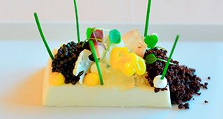

Crema de coliflor y mantequilla, flor de huevo, caviar de arenque, aromas de tierra y un toque canalla
"Una crema realizada y servida como una salsa, hace de nexo de unión con el resto de ingredientes, Otoño en el plato con un par de notas inesperadas"

| Crema de Coliflor | |
|---|---|
| Coliflor | 800 gr. |
| Nata | 150 ml |
| Caldo de ave | 600 ml. |
| Huevos (yemas) | 1 un. |
| Mantequilla | 100 gr. |
| Maizena | 15 gr. |
| Curry | 1/2 cc. |
| Sal, Pimienta blanca, Nuez Moscada | 1 cc. |
| Flor de Huevo | |
| Huevos de corral (65/70) gr. | 4 un. |
| Aceite perfumado a elección | 16 pv. |
| Sal Maldon | 4 gr. |
| Finalización | |
| Caviar Moluga | 40 gr. |
| Remolacha | 32 un |
| Calabaza | 32 un |
| Salsa Brava | 32 un |
| Coulis Frambuesa | 32 un |
-
Crema de Coliflor
- Blanquear la coliflor en agua hirviendo salada dejar hervir 2'. Refrescar con agua fría y escurrir.
- Llevar a ebullición el caldo de ave con la coliflor previamente blanqueada, añadir el curry y la mantequilla, cocer a fuego lento tapado 20'.
- Pasar por thermomix, pasar por un colador. Dejar reducir hasta 50 cl. Diluir la maizena en 4 c.s. de agua fría.
- Tirar una pequeña cantidad de la crema en la maizena, batir, seguidamente juntar las dos mezclas y dejar hervir 3' sin dejar de remover con varillas.
- Mezclar la yema de huevo con la nata, añadir a la crema fuera del fuego removiendo constantemente.
- Pasar otra vez por la thermomix y el colador. Rectificar de sal y pimienta. Rectificar el espesor con la nata si es necesario. Flor de Huevo
- Colócalos de uno en uno sobre una taza y haz un hueco. Pulveriza con el aceite, casca un huevo encima, ciérralo bien y ata con bramante.
- Prepara los 4 huevos de esta manera. Pon abundante agua en una cazuela y cuando empiece a hervir introduce los huevos envueltos.
- Cuécelos a fuego medio durante 4-5 minutos. Sácalos, retira la cazuela y quítales el papel film con cuidado de no romperlos.
- Añade 6 gotas de aceite en cada huevo y un pellizco de sal Maldon.
- La cocción de 4/5 min, depende del tamaño del huevo y la temperatura del mismo. Acabado/Presentación
- Escaldar unos minutos y por separado las perlas de remolacha y calabaza. Cocer al dente. Refrescar con agua y hielo y escurrir.
- Colocar en plato sopero caliente la crema de coliflor. Colocar el huevo en el centro del plato
- Colocar alrededor y alternando por este orden caviar, calabaza, remolacha, salsa brava y coulis. Servir inmediatamente.